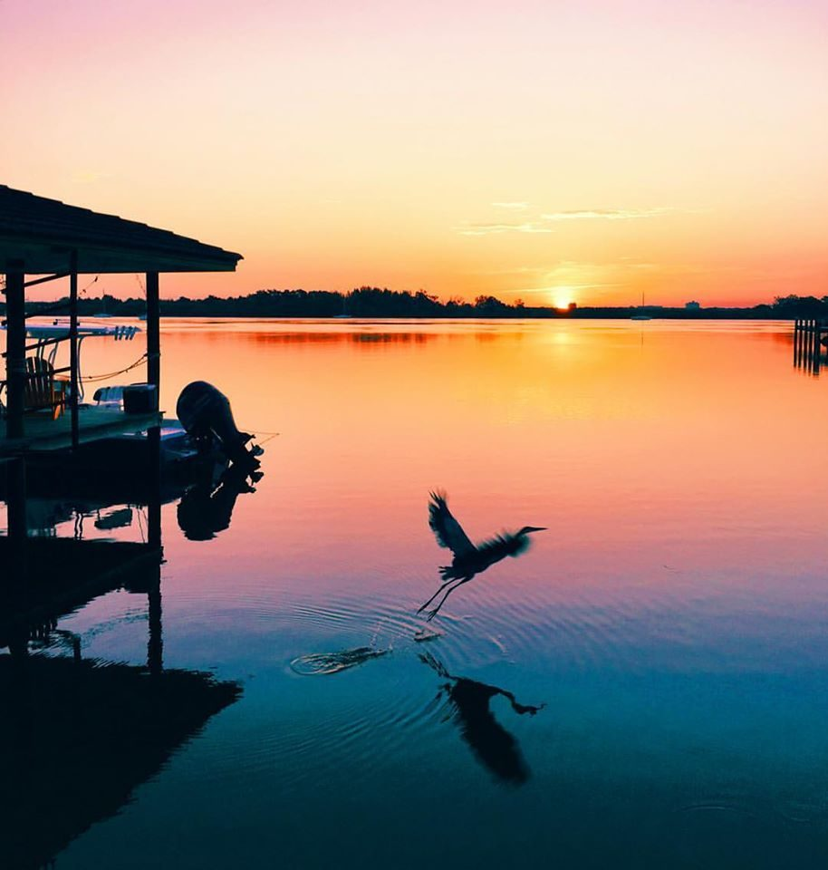
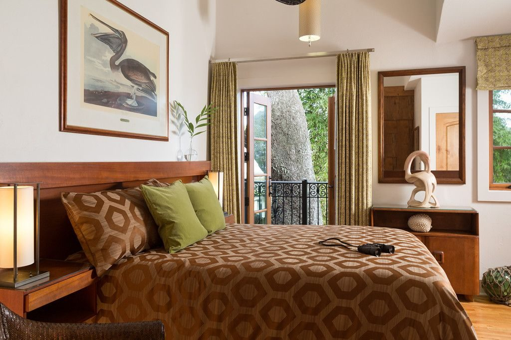
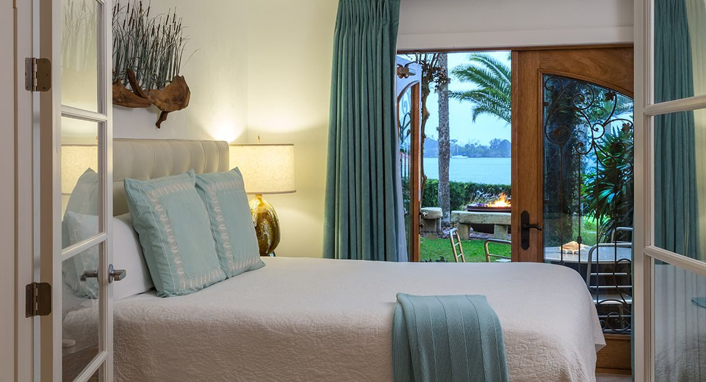
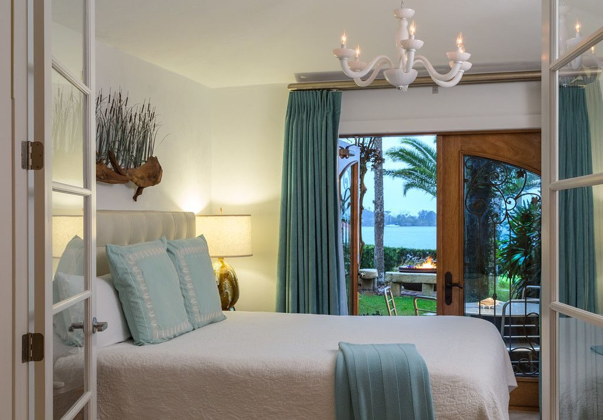
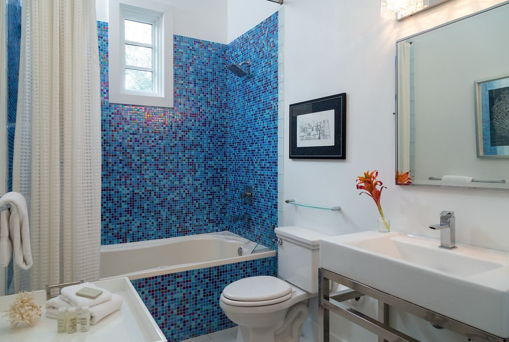
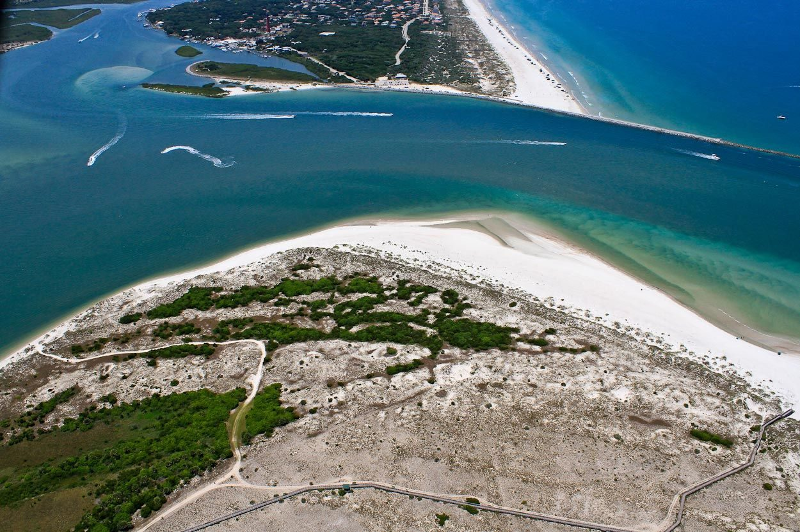

Two nights at Black Dolphin Inn
New Smyrna Beach, Florida
Fourteen rooms on the river
Black Dolphin Inn sits on the Indian River in New Smyrna Beach, right on the Intracoastal Waterway. Fourteen rooms, a dock that faces west, and not much else between you and the water.
The sunsets are worth arranging your evening around. The river is wide here, and the sky does the thing you hope it'll do. In the mornings, dolphins and manatees pass along the waterfront. It's a quiet, well-kept place: boutique in the real sense, not the marketing sense.


The rooms
River views, good light, comfortable beds. Some have jetted tubs and private decks, though the specific room is yours to choose when you book. Browse what's available and pick the one that looks right.






Go find some dolphins

The Marine Discovery Center runs a naturalist-led dolphin cruise on the Indian River: a 40-passenger pontoon, afternoon or evening departures, with a guide who knows the water. You'll likely see bottlenose dolphins, maybe manatees, almost certainly pelicans.
It's not a guarantee, since wildlife sets its own agenda and the boat only goes out in fair weather, but it's a wonderful couple of hours on the water. It departs from 116 N Causeway, a few minutes from the inn. Check marinediscoverycenter.org for the schedule.

While you're there
- Flagler Avenue runs to the beach, the Atlantic side of the causeway, with good sand and warm water.
- Canal Street is New Smyrna's old downtown: galleries, restaurants, shops with actual personality.
- Guided kayak eco-tours through the river and mangrove channels; outfitters are nearby.
- New Smyrna is a surf town. Boards and lessons are easy to find if you want them.
A weekend, loosely
Friday evening
Arrive, check in, find the dock. The sunset faces you.
Saturday
No alarm. Walk or drive across the causeway to Flagler Avenue and the beach. If the weather cooperates, the afternoon dolphin cruise is a good use of a few hours. Dinner somewhere on Canal Street.
Sunday
A slow morning at the inn. Late breakfast, one more look at the river, then head out when you're ready.
This is a suggestion, not a schedule. Do whatever sounds good. The dates are yours to pick, whenever a weekend opens up.